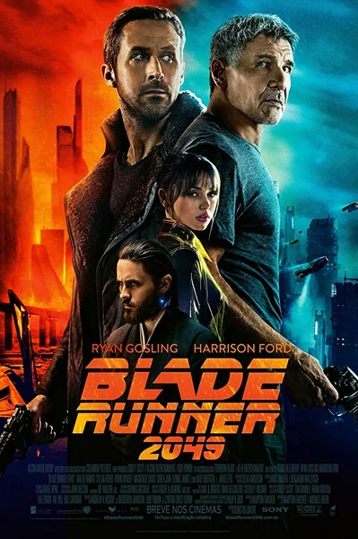

Фильм · 2017 · Драма, Фантастика
Спустя тридцать лет: офицер Кей — репликант нового поколения на службе в полиции — беспрекословно выполняет приказы, пока очередное задание не приводит его к останкам, погребенным под засохшим деревом. Тайна, которую они скрывают, способна стереть грань между репликантами и людьми; за этим секретом охотятся корпорации, повстанцы и сама память. Дени Вильнёв снимает научную фантастику в духе «медленного кино», размышляя об идентичности, искусственно созданном одиночестве и любви, которая тоже вполне может оказаться лишь алгоритмом. Редкое продолжение, достойное оригинала.
Thirty years later: officer K, a new-generation replicant working for the police, follows orders without questions until one job leads to bones buried under a dead tree. What they promise could collapse the border between replicants and humans, and corporations, rebels and memory itself all hunt the secret. Denis Villeneuve shoots sci-fi as slow cinema: about identity, engineered loneliness and love that may be an algorithm too. A rare sequel worthy of its original.
← Вернуться в каталог IT Movies